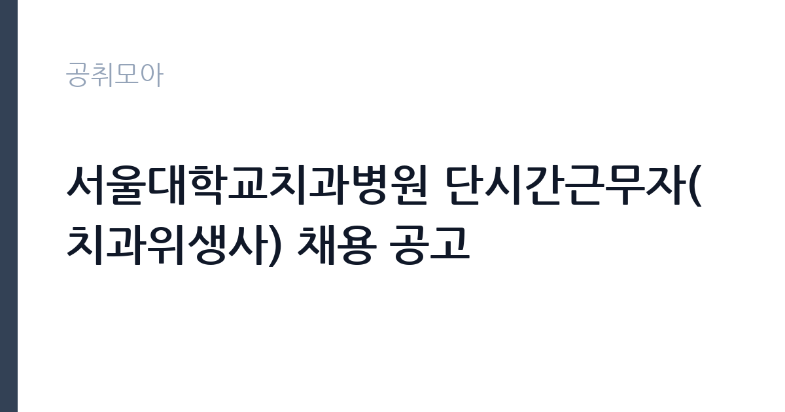

[공공기관] 서울대학교치과병원 단시간근무자(치과위생사) 채용 공고
서울대학교치과병원 · 서울 · 마감 2026-11-16 (D-12) · 출처 잡알리오

한눈에 보는 모집 조건
| 기관 | 서울대학교치과병원 |
|---|---|
| 공고명 | 서울대학교치과병원 단시간근무자(치과위생사) 채용 공고 |
| 고용형태 | 정규직 |
| 근무지 | 서울 |
| 게시일 | 2026-11-04 |
| 마감일 | 2026-11-16 (D-12) |
지원자격, 이렇게 읽으세요
- 공공기관 채용공시
- 세부 조건은 원문 공고문 확인
정규직 채용은 기간의 정함이 없는 근로계약을 전제로 합니다. 수습 기간을 두고 평가한 뒤 정규직으로 확정하는 절차가 일반적이며 기관의 인사 규정과 임금 체계를 적용받습니다. 이번 공고는 서울대학교치과병원이 직접 진행하는 자체 전형입니다. 해당 직종의 면허나 자격증이 필수입니다. 임상병리사는 임상병리사 면허를, 방사선사는 방사선사 면허를 요구하는 식입니다. 신규 면허 취득 예정자도 지원 가능한지 공고문에서 확인해야 하며, 졸업 예정자와 자격 취득 예정자의 지원 가능 여부가 다르게 규정되는 경우가 있습니다. 한시임기제나 기간제로 채용되면 근무 기간이 명확히 정해집니다. 결격사유와 건강 상태 확인 절차가 있습니다. 우대 사항은 증빙이 없으면 반영되지 않으므로 해당 여부를 먼저 확인해야 합니다. 학력이나 전공 요건이 없는 공고라도 제출서류 목록은 그대로 적용되므로 서류 준비 부담은 줄지 않습니다. 자격증은 유효 기간과 등록 상태를 확인해야 합니다. 갱신이 필요한 자격이라면 갱신 여부를 먼저 점검하십시오.
이 공고의 포인트
이 공고의 첫 번째 포인트는 고용 형태입니다. 수습 기간 평가를 통과하면 기간의 정함이 없는 신분이 되어 고용이 안정됩니다. 두 번째는 업무 범위가 명확하다는 점입니다. 보건의료 지원직 직무로 채용되므로 배치 이후 담당 업무가 크게 흔들리지 않습니다. 세 번째는 근무지입니다. 서울 지역 근무로 접근성은 좋지만 그만큼 지원자가 몰리는 지역이므로 경쟁률을 넉넉히 잡아야 합니다. 채용 규모가 크지 않아 면접 비중이 높은 전형이 될 가능성이 있습니다. 같은 직무로 함께 올라온 공고 3건 가운데 마감이 중간에 위치하므로 다른 공고와 일정이 겹치는지 확인하십시오. 선발 인원은 공고문에 명시되어 있으니 모집분야 항목을 함께 확인하십시오.
전형은 어떻게 진행되나
1차 서류, 2차 면접의 2단계로 진행되는 구성이 일반적입니다. 서류에서는 자격 요건과 경력 증빙을 확인하고, 면접에서는 실제 업무 수행 능력과 조직 적응을 봅니다. 직무에 따라 필기시험이나 실기, 컴퓨터 활용 시험이 추가되기도 하므로 공고문의 전형표를 먼저 확인하십시오. 단계별로 합격자만 다음 전형에 응시할 수 있고, 단계마다 응시 자격 확인 서류를 다시 제출해야 하는 경우가 있습니다. 최종합격자 발표 후에는 신원조회와 채용 신체검사가 남아 있습니다. 경력 증명서에 직무 내용이 적혀 있지 않으면 인정받지 못할 수 있으므로 상세 기재를 요청하십시오.
이런 분께 추천해요
- 해당 직종 면허를 보유한 분
- 검사 절차와 기록 관리에 정확성을 가진 분
- 개인정보 보호 규정을 엄격히 지킬 수 있는 분
지원 전 체크리스트
- 응시자격 요건과 경력 기준을 충족하는가 — 경력은 증명서로 입증해야 합니다
- 수습 기간과 정규직 전환 조건을 확인했는가
- 제출서류 목록을 모두 준비했는가 — 누락 시 서류 단계에서 탈락합니다
- 접수 마감 2026-11-16 이전에 접수 방식을 확인해 제출했는가
모집 일정과 제출 타이밍
공고 게시일은 2026-11-04, 접수 마감은 2026-11-16입니다. 준비 기간은 약 12일로 서류 준비와 자격 증빙을 함께 처리하기에는 넉넉하지 않은 편입니다. 첫 이틀 안에 공고문과 첨부 서식을 내려받아 요건을 확인하고 남은 기간에 증빙 서류를 발급받는 일정이 현실적입니다. 면접은 서류 합격자 발표 후 짧은 간격으로 진행되는 경우가 많으므로 서류 제출과 동시에 면접 준비를 시작하는 편이 안전합니다. 마감일에는 접수 시스템이 몰리므로 하루 전까지 제출을 마치는 것이 좋습니다. 임용 예정일이 빠르게 잡히는 공고이므로 현재 일정과 겹치지 않는지 미리 확인하십시오.
직무 이해하기: 공공기관
교육기관은 학교 교육과 교원 연수, 교육 행정을 담당합니다. 교육청은 관내 학교를 지원하고, 대학은 학사와 연구, 학생 지원 업무를 운영합니다. 예산과 인사 규정이 교육부 지침과 자체 규정을 함께 따르므로 절차가 엄격합니다. 보건의료 지원직은 검사와 진료를 지원하는 실무를 맡습니다. 임상병리 업무는 검체를 채취·접수하고 장비로 분석한 뒤 결과를 검증하는 절차로 진행됩니다. 장비 정도 관리와 시약 재고 관리, 검사 결과 기록이 함께 따라붙습니다. 병무청이나 군 부대, 공공병원에서는 신체검사와 채용 신체검사 지원 업무 비중이 큽니다. 개인정보와 의료 정보를 다루므로 보안 규정 준수가 엄격합니다. 실무는 선임자와 짝을 이뤄 익히는 방식이 일반적이라 첫 달은 교육과 현장 적응에 쓰입니다. 업무 매뉴얼과 지침이 문서로 정리되어 있어 절차를 익히면 반복 업무는 빠르게 손에 붙습니다. 이 건의 근무 대상 지역·부서는 원문 기준 '치과위생사'입니다.
자기소개서 작성 팁
보건의료 지원직 지원서는 정확성과 책임감을 증명하는 데 집중하십시오. 실습이나 근무 중 검사 오류를 발견해 바로잡은 경험, 장비 관리 기록을 유지한 경험이 효과적입니다. 환자와 직접 대면하는 업무라면 응대 경험도 함께 쓰십시오. 짧은 계약 기간이라도 업무 공백을 만들지 않겠다는 의지를 밝히면 좋습니다. 구성은 지원 동기, 직무 경험, 기여 방안 순서가 무난합니다. 지원 동기는 서울대학교치과병원의 사업 중 본인이 관심을 가진 부분을 한 가지로 좁혀 서술하고 추상적인 표현은 줄이십시오. 직무 경험은 담당했던 업무와 규모, 결과를 수치로 제시하면 설득력이 올라갑니다. 기여 방안은 입사 후 첫 3개월과 1년 계획으로 나눠 쓰면 준비도가 드러납니다.
면접 준비 포인트
면접에서는 검사 절차 이해와 정확성에 대한 태도를 봅니다. 검사 결과가 비정상으로 나왔을 때 어떻게 확인하는지, 장비 오작동 시 어떻게 대응하는지 묻습니다. 개인정보를 다루는 직무이므로 보안 의식을 언급하는 것이 좋습니다. 업무가 몰리는 시간대의 우선순위 판단도 자주 나오는 질문입니다. 본인 경험을 말할 때는 기간, 역할, 결과를 순서대로 정리해 두면 질문이 바뀌어도 활용할 수 있습니다. 마지막 질문 시간에는 근무 조건에 대한 확인 사항을 한 가지 정도 준비해 가면 성실성이 드러납니다.
급여·근무조건 읽는 법
보건의료 지원직의 보수는 임용 형태에 따라 달라집니다. 한시임기제공무원은 국가공무원 또는 지방공무원 보수규정상 연봉등급제를 적용받고, 임용 기간과 연봉등급이 공고문에 명시됩니다. 기간제 근로자라면 기관 임금표에 따라 월급이 정해지며, 교대·당직 수당이 붙는 경우가 있습니다. 2026년 최저임금은 시급 10,320원, 월 환산 2,156,880원입니다. 면허 수당과 특수 근무 수당 포함 여부를 원문에서 확인하십시오. 다만 서울대학교치과병원의 보수 수치는 이 글에서 확인된 공시 자료가 없어 추정해 제시하지 않았습니다. 공고문 처우 항목과 첨부된 보수표를 기준으로 확인하십시오. 알리오 2025년 결산 공시 기준 공공기관 전체 일반정규직 1인당 평균보수는 7,376만 9천원, 신입사원 평균초임은 4,031만 6천원입니다(무기계약직 미포함). 2026년 적용 최저임금은 시급 10,320원, 월 환산 2,156,880원(주 40시간·209시간 기준)입니다. 고용노동부 고시 제2025-47호로 확정된 금액입니다. 공고문에 금액이 제시되지 않은 항목은 원문 보수표나 처우 설명에서 확인해야 하며 확인되지 않은 수치는 쓰지 않는 것이 원칙입니다. 비교할 때는 월 급여뿐 아니라 상여·명절휴가비·복지포인트·초과근무수당까지 포함한 연간 총액으로 계산하십시오. 기간제라면 계약 기간 동안의 총액을, 무기계약이라면 호봉 상승과 정년까지의 누적 소득을 기준으로 판단하는 편이 정확합니다.
자주 묻는 질문
- 선발 인원은 몇 명인가요?
공고문의 모집분야 항목에 직종별 인원이 표로 제시되어 있습니다. 첨부된 공고문 원문에서 확인하십시오. - 근무지는 어디인가요?
서울 지역의 서울대학교치과병원 소속 근무지입니다. 세부 주소와 출퇴근 조건은 원문 공고문에서 확인할 수 있습니다. - 보수는 얼마인가요?
채용 신분(정규직)과 기관 임금 규정에 따라 정해지며 구체적인 금액은 공고문 처우 항목에 제시됩니다. 금액이 공개되지 않은 경우에는 원문의 보수표를 확인하십시오.
함께 보면 좋은 공고
[공공기관] 한국농어촌공사 영산강사업단 공무직(청소원) 보훈 장애 제한경쟁 채용공고 — 마감 2026-11-20[공공기관] 2027년 1차 박사후연수연구원, 석사후연수연구원 및 위촉연구원 공개채용 — 마감 2026-11-20[공공기관] 서울대학교치과병원 2027년 상반기 정규직(원무직) 채용 공고 — 마감 2026-11-18출처: 잡알리오 공개정보를 바탕으로 공취모아가 정리한 안내글입니다. 모집 조건·일정은 변경될 수 있으니 지원 전 반드시 원문 공고문을 확인하세요. 본 글은 정보 제공용이며 합격을 보장하지 않습니다.